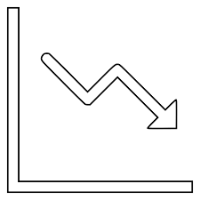

Mortgage Rates in Nigeria



Get easy access to housing market professional and institution based on their function
Access core housing data from multiple sources, including the renowned NMRC Research team.
Explore key economic indicators, construction spending and real estate development indexes, settlement area data and many more indices and datasets.
With the HMIP being your housing full-service broker, you can make more informed decisions as you improve your business forecasts and identify opportunities within the real estate and property development/investment space
Power your ideas using data you can trust. Leverage our datasets below to gain insights, spur creativity, innovate, and grow your business in the Nigerian mortgage markets.

Housing Statistics HMIP Mortgage Statistics Dashboard

Housing Pricing HMIP Housing Price Index

NRE-DCMP Nigeria Mortgage Refinance
obtain a monthly payment amortization report and quick affordability check in just a few clicks
Mortgage AMOUNT
MORGAGE TERMS IN YEARS
INTREST RATE
To enable Nigerians to take advantage of these improvements to own their dream homes, we have put together the following tips on the path to homeownership as a guide.